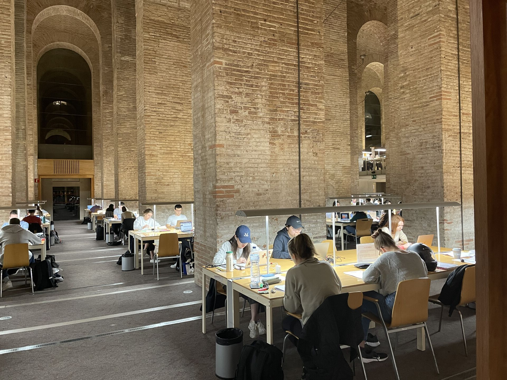
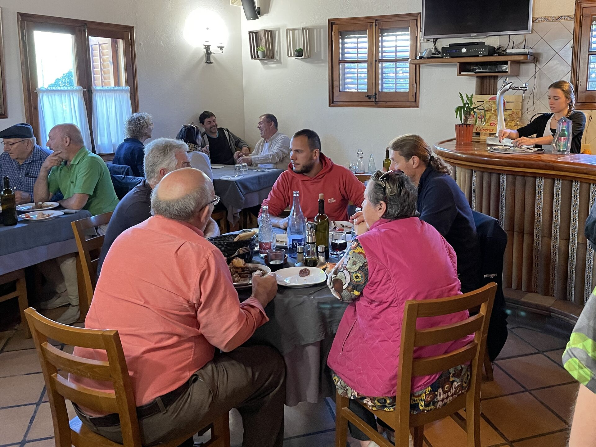
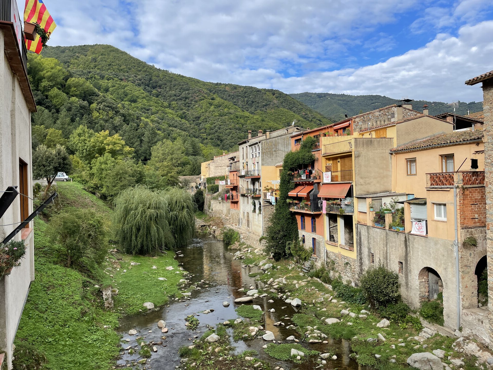
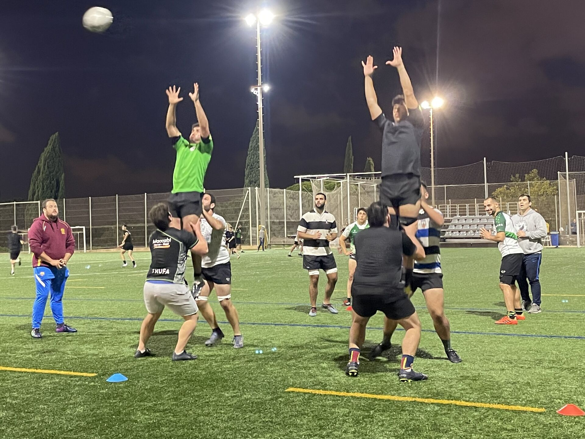
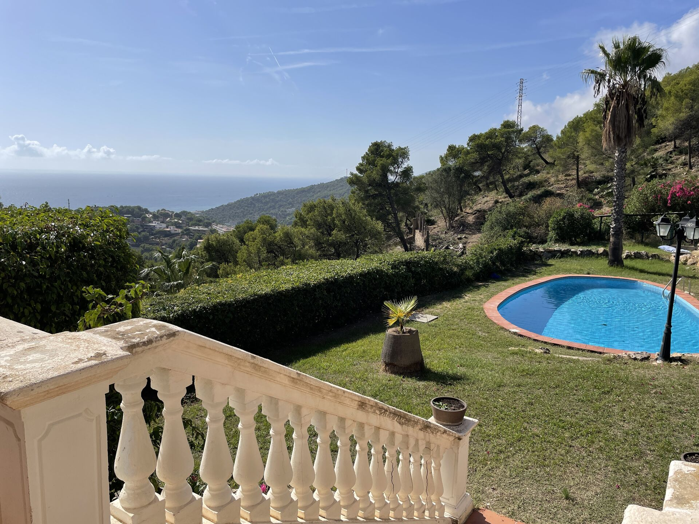
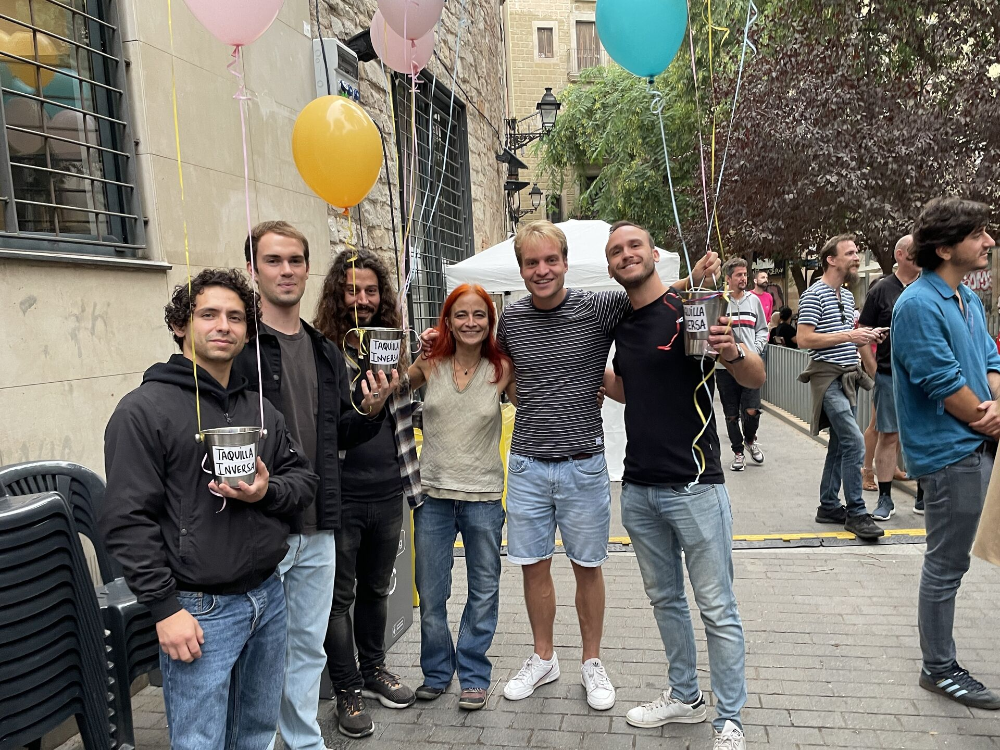
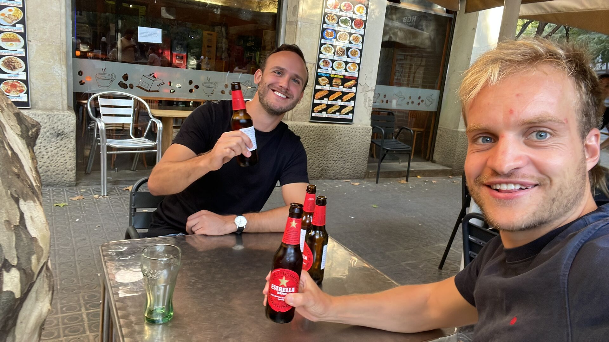

05 Ups en downs
Reacties eerste blog,
mindere momenten om van te leren
en de week die vorm krijgt.
Het is begin november en nog altijd rond de 28 graden. Dat Barcelona warm ging worden dat had ik wel verwacht, maar zelfs de Catalaanse lokale bewoners spreken van ongekend warme temperaturen voor deze tijd van het jaar. Tot nu toe heeft mijn was alleen nog maar bestaan uit T-shirts, korte broeken, korte sokken, onderbroeken en handdoeken. Het is even geleden sinds de laatste keer dat ik in de pen ben gekropen. Inmiddels staan de eerste blogs online en geweldig om te zien dat er zo veel mensen uit verschillende landen de moeite hebben genomen om deze te lezen. Er kwamen veel reacties binnen zoals van mijn tante uit Limburg, oud basisschool collega van de Griffioen uit Prinsenbeek en de onderbuurman uit Wageningen die afsloot met ‘de kale oude slager op de scooter’. Geweldig om met mensen die je zo goed gekend hebt in contact te kunnen blijven.
Iemand stuurde mij een berichtje dat de zin die ik geschreven had in de eerste blog ‘Hoewel mijn eerste ingeving was dat het een baantje was voornamelijk voor vrouwen’ bij haar de nodige vraagtekens had opgeroepen wat betreft stereotyperend richting vrouwen dat het een vrouwen baan zou zijn. Zo zie je maar, hoe een stukje tekst door een lezer heel anders opgevat kan worden dan de manier waarop je iets bedoelt. In het verleden heb ik als basisschool leraar gewerkt en dan zat ik tijdens de pauze soms met mijn boterhammenbakje met 9 dames te lunchen waarbij de gesprekken voornamelijk gingen over de zwangerschappen en het opvoeden van de kinderen. Dat was soms best wel even lastig, waardoor ik benieuwd was of ik mij op Vilente, waar ook veel vrouwen werkzaam zijn, op mijn gemak zou voelen. Maar het bleek eigenlijk super goed uit te pakken. In deze blog schrijf ik het liefst natuurlijk alle spontane dingen op die naar boven komen, maar het spreekt voor zich dat het nooit mijn bedoeling zal zijn om welke groep dan ook in een verkeerd daglicht te zetten.
 Op 9 oktober ging de eerste factuur eruit als freelancer voor mijn eigen bedrijfje genaamd van Gils AI (kunstmatige intelligentie), wat natuurlijk reden was om het glas te heffen. Mijn eerste maand wonend in Barcelona verliep alles behalve vlekkeloos. Ik zal op een later moment zeker nog eens wat dieper ingaan op het werk wat ik hier doe, maar een belangrijk moment is vrijdag klokslag 9.00, want dan bespreek ik met programmeur Ramon uit Deventer mijn waslijst aan vragen waar ik die week tegenaan gelopen ben, waarna hij weer nieuwe programmeer opdrachten klaarzet voor de week die komen gaat. Met meer dan 10 jaar programmeerervaring ik eigenlijk geen betere leermeester wensen dan Ramon. Hoewel hij ziet dat ik nog een lange weg te gaan heb, ziet hij ook hoe gemotiveerd ik ben om de codes beter te begrijpen en dat motiveert hem weer om buiten zijn drukke leven ook nog tijd vrij te maken om mij in de juiste richting te sturen. De eerste weken waren we nog wat zoekende naar hoe de samenwerking zo efficiënt mogelijk konden verlopen. Aangezien Ramon al zo veel ervaring had, en ik nog zo weinig, gebeurde het wel eens dat Ramon dacht dat een opdracht geschikt was voor mij, die uiteindelijk toch nog te lastig bleek. Of dat we in ons enthousiasme het hele uur wat Ramon heeft vrij geroosterd over één opdracht hadden gepraat, waarbij we het er niet van kwam om live de overige vragen te stellen.
Op 9 oktober ging de eerste factuur eruit als freelancer voor mijn eigen bedrijfje genaamd van Gils AI (kunstmatige intelligentie), wat natuurlijk reden was om het glas te heffen. Mijn eerste maand wonend in Barcelona verliep alles behalve vlekkeloos. Ik zal op een later moment zeker nog eens wat dieper ingaan op het werk wat ik hier doe, maar een belangrijk moment is vrijdag klokslag 9.00, want dan bespreek ik met programmeur Ramon uit Deventer mijn waslijst aan vragen waar ik die week tegenaan gelopen ben, waarna hij weer nieuwe programmeer opdrachten klaarzet voor de week die komen gaat. Met meer dan 10 jaar programmeerervaring ik eigenlijk geen betere leermeester wensen dan Ramon. Hoewel hij ziet dat ik nog een lange weg te gaan heb, ziet hij ook hoe gemotiveerd ik ben om de codes beter te begrijpen en dat motiveert hem weer om buiten zijn drukke leven ook nog tijd vrij te maken om mij in de juiste richting te sturen. De eerste weken waren we nog wat zoekende naar hoe de samenwerking zo efficiënt mogelijk konden verlopen. Aangezien Ramon al zo veel ervaring had, en ik nog zo weinig, gebeurde het wel eens dat Ramon dacht dat een opdracht geschikt was voor mij, die uiteindelijk toch nog te lastig bleek. Of dat we in ons enthousiasme het hele uur wat Ramon heeft vrij geroosterd over één opdracht hadden gepraat, waarbij we het er niet van kwam om live de overige vragen te stellen.
Dit was dezelfde week waarin ik naast Escola Pia Sarrià voor de eerste keer een voetbalwedstrijd mee mocht spelen met 10 Catalaanse jongens. Hoewel ze allen erg vriendelijk waren, en ze mij de bijnaam ‘Matthijs de Ligt’ gaven, veranderden er een aantal zodra de bal rolde naar temperamentvolle gasten die alles opzijzetten om maar te kunnen winnen, met tot gevolg dat ik in de toch al korte wedstrijd voornamelijk de reservebank mocht warmhouden. Ik baalde natuurlijk flink en vond het bovendien ook erg jammer dat er bijvoorbeeld helemaal geen groepsapp was voor wat gezelligheid. Deze gasten waren erg vriendelijk maar tegelijkertijd ook erg laks in de communicatie waardoor ik soms 1 uur voor de wedstrijd werd gevraagd om te komen. Een paar dagen later werd ook nog mijn zadel gejat van mijn fiets die ik al met maar liefst twee sloten op slot had gezet waardoor ik gênant genoeg zonder zadel naar huis moest fietsen. Daar kwam nog bij dat de begeleider van een hike excursie mij een boos bericht met ‘Betaal nu, of ik gooi je uit de groep!’ had gestuurd waarbij later bleek dat ik hem wel had betaald maar dat hij niet goed had gekeken. Op dat moment dacht ik. Jaja, het is hier allemaal ‘tranquillo, tranquillo!’ maar zodra men iets van je nodig heeft dan lijken sommige mensen toch niet heel ‘tranquillo’. Ik zat er dus even behoorlijk doorheen en was ook snel geïrriteerd. Dat je iedereen over een kam scheert en denkt ja hoor, die zal vast ook wel weer niet reageren. Een belletje met moeders deed wonderen.
De afgelopen weken heeft het Spaanse leven veel meer vorm gekregen. Op dinsdag ga ik naar de Salsa les. De eerste keren voelde ik mij echt een vreemde maar nu ik wat vaker ben geweest en ik de mensen wat beter ken merk ik ook dat ik er steeds meer van kan genieten. Ze organiseren iedere vrijdag een gratis salsafeestje simpelweg in de open lucht, waar je gezellig salsa en bachata kan dansen. Afgelopen weekend heb ik zelfs de moed verzameld om Antillia, de salsa club van Barcelona te bezoeken en ook dat was weer een geweldige ervaring. Op woensdagavond heb ik een talenuitwisselingsuurtje. Dan help ik twee Spanjaarden een half uurtje om Nederlands te leren, en daarna wisselen we naar het Spaans. Waarom zouden die mensen Nederlands willen leren vraag je je dan misschien af. Nou één man was gefascineerd door de Nederlandse oud Barcelonalegende Johan Cruijff en de dame had een vriendin in Nederland waarmee ze graag beter wilde leren praten. Win-win dus!
En ook de donderdag kreeg invulling. Ik stond even teleurgesteld te staren naar mijn voetbalschoenen die ik net nieuw had aangeschaft en bedacht ik mij ineens, waarom ga ik niet de Rugby nog eens proberen? Ik ben diezelfde avond nog naar het olympisch dorp gefietst waar pal naast ‘Torre Telefónica’ een communicatietoren in de vorm van een olympische fakkel 30 beren van gasten stonden te trainen. De ‘entrenador’ vertelde me direct dat ik de eerst volgende training meteen mee kon spelen. En zo vulde ook de donderdag zich met een training van 8 tot 10. Het klopte wat goede vriend Rob me zei: ‘Maat, nu zal het nog even wennen zijn maar zodra alles staat kun je er de vruchten van gaan plukken’.
Na de aanschaf van een paar stevige wandelschoenen bij de Decathlon weerhield niets mij er meer van om er lekker op uit te trekken en mensen te ontmoeten. Met verschillende groepen bezocht ik de prachtige omliggende natuurgebieden van de stadjes Queralbs en Maçaners nabij Andorra en badplaats Sidges ten zuiden van Barcelona, waar ik de traditionele koude zomersoep Gazpacho mocht proeven. Ik nodigde wat mensen uit voor een pingpongtoernooitje in het Stadspark. Een dagje ben ik naar een thermo bad geweest net buiten Barcelona. Daar nam ik de verkeerde trein, moest apart betalen voor een badmuts enz. maar als het dan iets beter gaat dan laat je jezelf ook wat minder snel van de wijs brengen. Ook een hele bijzondere dag was, op bezoek bij Isabella die ik nog kende uit Wageningen. Ze is naar Barcelona verhuisd en bewoont een huis wat je gerust een paleis mag noemen in de welgestelde wijk Castadelfells. Bij aankomst legde Isabella mij uit welk zwembad van Lionel Messi was en welke van Louis van Gaal. Wat een heerlijke luxe en wat blijft het toch lekker om dan de hele dag die warme zon op je bol te hebben en in de zee te duiken.
Wat ik jullie zeker niet wil onthouden is het verhaal over de RAI (nee niet die uit Amsterdam). Ik vind het altijd geweldig om onder de mensen te zijn en iets bij te dragen aan de samenleving. Zo werkte ik ooit in een lunchroom voor mensen met een beperking in Ulvenhout, langs de Australische stranden als onkruidbestrijder, voor de jongerenraad van Staatsbosbeheer en natuurlijk bij Vilente, wat jullie inmiddels kennen, het verzorgingstehuis in Wageningen waarvan ik hier nog zulke lieve berichtjes heb ontvangen. Zoekende naar iets in die trant kwam ik dus bij RAI, een minitheater in het hart van de levendige Barcelona wijk El Born, met een knusse centrale bar omringd door verschillende zalen voor theater, dans, lezen, workshops etc. Ik kwam binnen en dacht direct. Ja, dit is precies wat ik zoek! Ik werd achter de bar gezet met Katie en ik moest de betalingen regelen. Dos cinquenta (€2,50)! Cinco setenta (€5,70)!! Het was een geweldige manier om een beetje feeling te krijgen voor de Spaanse cijfers en de bezoekers afkomstig uit zo’n beetje alle landen van Zuid Amerika waren erg uitgelaten en in voor een Spaans praatje. Het was ook niet verkeerd dat ik achter de bar gratis biertjes mee kon drinken. Al deze geweldige ervaringen laten zien dat het goed mogelijk is om een tof leven te hebben, zonder al te veel geld uit te geven.
Na een aantal mindere momenten, de ‘downs’ dus ook wat positieve ‘ups’ die natuurlijk vertrouwen geven voor de toekomst. Ik heb nog geen gevoel van heimwee en de wenstruggels horen er, ook na een paar maanden, natuurlijk nog een beetje bij. Voorlopig ben ik in ieder geval nog niet klaar met Barcelona. Ik kijk er erg uit naar dat het stof wat zal dalen en dat alles een beetje rustiger wordt, daarover vast en zeker meer in de volgende blog. Super tof dat je weer de tijd genomen hebt om mijn blog te lezen!